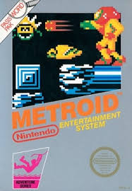
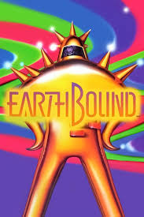

Reviews of Classic Nintendo Games
-
Super Mario Bros. (1985)
Review: "Super Mario Bros." is the quintessential platformer, combining intuitive controls with challenging level design. Its legacy as one of the greatest games of all time is well-deserved, bringing joy to generations of players. The simple yet iconic graphics and catchy soundtrack still hold up today.
Rating: 10/10

-
The Legend of Zelda (1986)
Review: The original "Legend of Zelda" is a masterclass in open-world exploration, giving players freedom to tackle dungeons and quests in any order. Its innovative design paved the way for modern adventure games, making it a landmark title in gaming history.
Rating: 9.5/10

-
Donkey Kong (1981)
Review: A challenging and addictive arcade game, "Donkey Kong" introduced both Mario and Donkey Kong to the world. Its straightforward mechanics and escalating difficulty have kept it engaging, making it a true arcade classic that remains enjoyable to this day.
Rating: 8.5/10

-
Metroid (1986)
Review: "Metroid" introduced players to a dark, atmospheric world filled with exploration and mystery. The game's open-ended design and rewarding gameplay make it a timeless classic, though its difficulty may be challenging for newer players.
Rating: 9/10
 -
Pokémon Red and Blue (1996)
Review: The original "Pokémon Red and Blue" games are addictive, offering a huge world filled with creatures to catch, train, and battle. With its simple RPG mechanics and a unique world, it became a cultural phenomenon that remains popular today.
Rating: 9/10

-
Super Mario Kart (1992)
Review: "Super Mario Kart" is a fast-paced and fun racing game that set the standard for kart racing titles. Its bright graphics, iconic tracks, and competitive multiplayer modes make it as enjoyable today as it was at launch.
Rating: 8.5/10

-
Star Fox (1993)
Review: "Star Fox" broke new ground with its 3D graphics on the Super Nintendo. The gameplay is engaging, with challenging space missions and memorable characters. Although the graphics are dated by today’s standards, it remains a fan favorite.
Rating: 8/10

-
EarthBound (1994)
Review: Known for its quirky humor and unique storyline, "EarthBound" is a deeply memorable RPG. Its modern setting and clever dialogue set it apart from other games of its time, creating a cult following that persists.
Rating: 9/10
 -
Kirby’s Adventure (1993)
Review: "Kirby’s Adventure" is a delightful platformer with fun mechanics and whimsical levels. Kirby's copy ability added a fresh twist to the genre, making it a standout entry in Nintendo’s platformer lineup.
Rating: 8.5/10